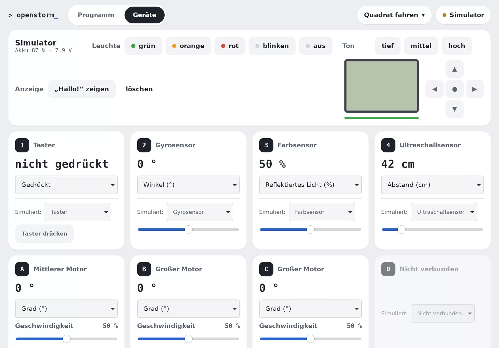

Blöcke wie im Original
Gleiche Kategorien und Farben: Motoren, Fahren, Anzeige, Klang, Ereignisse, Sensoren, Variablen, Listen und Meine Blöcke. Mehrere Ereignisse laufen gleichzeitig.
Für LEGO® MINDSTORMS® EV3
OpenStorm bringt die Blockprogrammierung von EV3 Classroom aufs iPad – ohne Kabel, ohne App-Store und ohne Mac. Ein kleiner Raspberry Pi verbindet iPad und EV3.
Raspberry Pi OS mit OpenStorm-Brücke · etwa 600 MB · Release ansehen
So funktioniert's
Safari kann kein Bluetooth, und der EV3 versteht nur Bluetooth Classic. Ein Raspberry Pi Zero W sitzt dazwischen: Er liefert die App aus und leitet jeden Befehl an den EV3 weiter. Auf dem iPad wird nichts installiert.
Safari öffnetopenstorm.local
Die OpenStorm-Brücke
Motoren & Sensoren
Was drin ist
Gleiche Kategorien und Farben: Motoren, Fahren, Anzeige, Klang, Ereignisse, Sensoren, Variablen, Listen und Meine Blöcke. Mehrere Ereignisse laufen gleichzeitig.
Mit ▶ Start läuft das Programm sofort und steuert den EV3 direkt. Die gerade aktiven Blöcke leuchten auf.
OpenStorm übersetzt das Programm in die Maschinensprache des EV3. Dann läuft es am Stein, ganz ohne iPad.
Zeigt, was an den Ports 1–4 und A–D steckt, mit Live-Werten. Motoren bewegen sich per Antippen und Halten.
Sensorwerte aufzeichnen, als Liniendiagramm ansehen und als Tabelle für Excel oder Numbers speichern.
Kein EV3 zur Hand? Ein virtueller Stein im Browser mit Anzeige, Tönen und einstellbaren Sensoren.
Geräte
Jeder Sensor und Motor bekommt eine Karte mit seinem aktuellen Wert. Modus umschalten, Motor antippen, Leuchte und Ton testen – praktisch, um Kabel und Ports zu prüfen, bevor das Programm losfährt.
Im Browser mit dem Simulator ausprobieren →
Was du brauchst
Einrichten
Das machst du nur einmal. Danach genügt es, Pi und EV3 einzuschalten und OpenStorm auf dem iPad zu öffnen.
Lade das Pi-Image herunter und öffne den Raspberry Pi Imager am PC oder Mac.
SD-Karte in den Pi stecken und Strom anschließen. Nach etwa einer Minute ist die Brücke bereit. Die grüne Leuchte am Pi zeigt den Zustand:
Beim ersten Start kennt der Pi dein WLAN noch nicht und öffnet sein eigenes, offenes WLAN „OpenStorm“.
http://10.42.0.1/wlan aufrufen.Klappt es nicht (z. B. Passwort vertippt), öffnet der Pi nach etwa einer Minute wieder „OpenStorm“ und zeigt den Fehler. Ohne Heim-WLAN geht es auch: „Ohne Heim-WLAN weiter“ und die App unter http://10.42.0.1 öffnen.
Am EV3 unter Einstellungen (Schraubenschlüssel) → Bluetooth:
Den EV3 nicht in den Bluetooth-Einstellungen des iPads koppeln – das übernimmt der Pi.
In Safari openstorm.local öffnen. Dann Teilen → „Zum Home-Bildschirm“: OpenStorm bekommt ein eigenes Symbol und startet im Vollbild wie eine richtige App.
Projekte werden im Browser gespeichert, getrennt für jede Adresse. Nimm darum immer dieselbe Adresse.
1234 – am Stein bestätigen.Ab jetzt verbindet sich OpenStorm beim Öffnen automatisch mit diesem EV3.
Erstes Programm
Läuft's? Dann tippe oben auf den Projektnamen und beim Projekt auf „⇩ Auf den EV3“. Am Stein findest du es unter Datei-Navigation im Ordner mit dem Projektnamen – es läuft dann ganz ohne iPad.
Hilfe
Gib dem Pi nach dem Einschalten 2–3 Minuten. Erscheint es dann nicht, steck die SD-Karte in den PC: Auf dem Laufwerk „bootfs“ liegt openstorm-wlan.log und zeigt, was beim Start passiert ist.
openstorm.local lässt sich nicht öffnenPi und iPad müssen im selben WLAN sein. Leuchtet die grüne Leuchte am Pi nicht oder blinkt sie nicht, ist er noch nicht bereit. Ist der Pi im eigenen WLAN „OpenStorm“, lautet die Adresse http://10.42.0.1.
Prüfe am EV3: Bluetooth an, Sichtbarkeit an, iPhone/iPad/iPod aus. Ist der EV3 noch mit dem iPad oder einem anderen Gerät gekoppelt, die Kopplung dort entfernen. Das Protokoll der Brücke steht unter openstorm.local/log.
In der App unter Verbindung → WLAN der Brücke oder direkt unter openstorm.local/wlan. Beim Einschalten nimmt der Pi jedes gespeicherte WLAN in Reichweite; ist keins da, öffnet er wieder „OpenStorm“.
Gibt es eine neue Version, meldet die App das beim Start. Unter Verbindung → Brücke aktualisieren auf „Jetzt aktualisieren“ tippen. Der Pi braucht dafür Internet über dein WLAN. Während des Updates den Pi nicht ausschalten.
Projekte liegen im Browser, getrennt für jede Adresse: openstorm.local, 10.42.0.1 und die App auf dem Home-Bildschirm haben jeweils eigene. Öffne OpenStorm darum immer auf demselben Weg. Mit „Als Datei sichern“ im Projekte-Fenster lassen sich Projekte zusätzlich sichern.
Am PC oder Mac mit Chrome oder Edge kann die App hier im Browser den EV3 direkt über seinen Bluetooth-COM-Port ansteuern (Web Serial). Und der Simulator läuft in jedem Browser. Auf dem iPad braucht es den Pi.
Image laden, Pi einschalten, losprogrammieren.